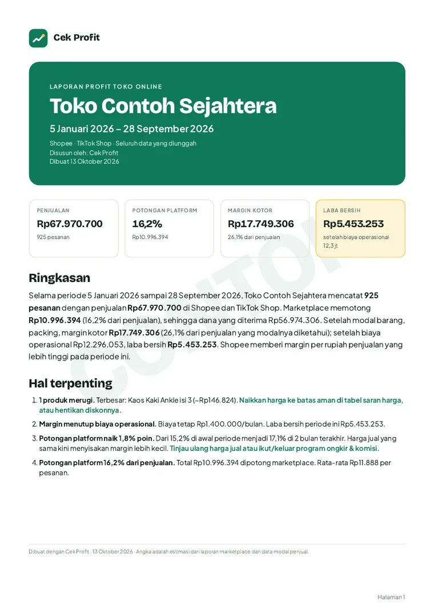
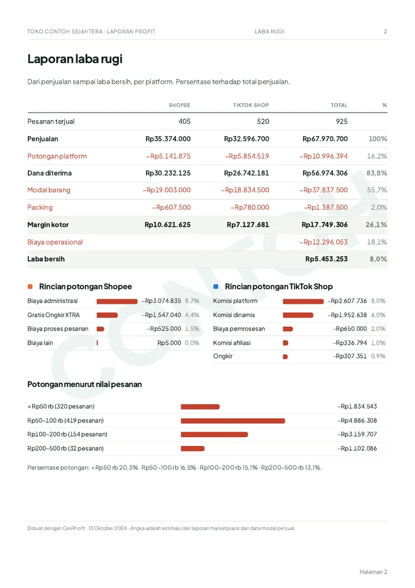
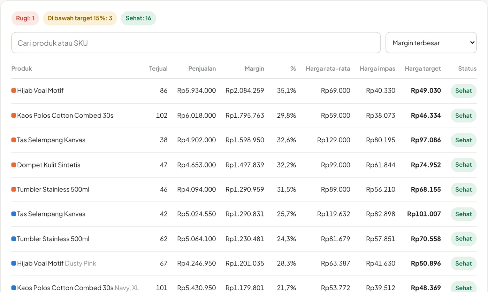

Tahu laba bersih toko online Anda, bukan cuma omzetnya.
Unggah laporan penghasilan Shopee dan TikTok Shop. Cek Profit mengurangkan potongan marketplace, modal barang, dan biaya operasional, lalu menunjukkan berapa yang benar-benar tersisa, per bulan dan per produk.
Gratis dicoba tanpa daftar. File laporan diproses di browser Anda dan tidak diunggah ke server.
Januari sampai September 2026
- Penjualan925 pesanan, Shopee dan TikTok Shop
- Rp67.970.700
- Potongan marketplace16,2% dari penjualan
- −Rp10.996.394
- Modal barang
- −Rp37.837.500
- Packing
- −Rp1.387.500
- Margin kotor
- Rp17.749.306
- Biaya operasionalgaji admin, sewa gudang
- −Rp12.296.053
Contoh dari data fiktif. Toko Anda akan punya nota yang sama, dihitung dari laporan resminya.
Seller Centre menunjukkan uang masuk. Bukan untung.
Banyak penjual baru sadar tokonya tidak untung setelah berbulan-bulan, karena angka yang penting tersebar di puluhan kolom laporan.
Potongan marketplace tersebar
Biaya admin, komisi dinamis, program ongkir, afiliasi, biaya proses. Masing-masing kecil, tetapi totalnya bisa seperlima penjualan, dan terus naik.
Modal tidak tercatat
Laporan marketplace tidak tahu harga beli Anda. Tanpa modal, penghasilan terlihat besar padahal sebagian besarnya uang Anda sendiri yang kembali.
Produk laris bisa merugi
Produk murah dengan diskon dan biaya tetap per pesanan sering paling banyak terjual, tetapi justru menggerus laba.
Tiga langkah, beberapa menit.
Unggah laporan
Laporan Penghasilan dari Shopee dan TikTok Shop; pesanan Tokopedia ikut di laporan TikTok. Tambahkan export pesanan dan file retur bila ada.
Isi modal
Unduh template yang sudah berisi daftar produk Anda, isi modal per unit, lalu unggah lagi. Atau mulai dengan modal rata-rata.
Baca nota laba
Laba bersih, produk yang merugi, harga yang disarankan, dan tren bulanan. Unduh laporan PDF atau simpan ke riwayat.
Yang Anda dapat
Nota laba otomatis
Penjualan, potongan marketplace, modal, packing, retur yang hilang, dan biaya operasional sampai laba bersih, per platform.
Modal per produk
Template Excel berisi produk Anda. Dicocokkan otomatis lewat SKU atau nama produk, dan tersimpan di akun.
Saran harga per produk PRO
Harga impas dan harga untuk target margin, memakai potongan marketplace produk itu sendiri. Status rugi, tipis, atau sehat.
Temuan dan saran PRO
Produk yang merugi, potongan yang naik, pesanan kecil yang tidak untung, dan ketergantungan pada sedikit produk.
Riwayat dan perbandingan
Simpan hasil setiap bulan dan bandingkan dengan periode sebelumnya. Bulan ini dibanding bulan lalu tampil di ringkasan.
Laporan PDF profesional PRO
Sampul dengan nama dan logo toko, laba rugi, tren, produk, retur, dan metode hitung. Siap dikirim ke mitra atau investor.
Retur yang tidak kembali
Tandai barang retur yang hilang atau rusak; modalnya dikurangkan dari laba.
Simulator harga dan target
Uji harga dan diskon sebelum dipasang. Pasang target laba bulanan dan lihat berapa bulan yang mencapainya.


Laporan yang bisa langsung dikirim.
Untuk pemilik toko, mitra usaha, investor, atau arsip. Dengan nama dan logo toko Anda.
- Ringkasan dan hal yang perlu ditindaklanjuti
- Laba rugi per platform dan rincian potongan
- Tren bulanan penjualan, margin, dan laba bersih
- Produk teratas dan produk yang perlu dinaikkan harganya
- Metode hitung dan batasannya, supaya pembaca tahu seberapa yakin angkanya
Tahu produk mana yang perlu dinaikkan harganya.
Setiap produk diberi status rugi, tipis, atau sehat, lengkap dengan harga impas dan harga untuk mencapai target margin Anda.

Data penjualan Anda tetap di komputer Anda.
Cek Profit membaca file laporan langsung di browser. Akun hanya dipakai untuk hal yang memang perlu disimpan.
Tidak pernah dikirim ke server
- File laporan penghasilan, pesanan, dan retur
- Nama, alamat, dan nomor telepon pembeli
- Daftar pesanan satu per satu
Disimpan di akun, bila Anda daftar
- Modal per produk dan pengaturan biaya
- Nama toko dan logo untuk laporan
- Ringkasan angka per periode untuk riwayat
Bisa dihapus kapan saja. Tanpa akun pun aplikasi tetap bisa dipakai; semuanya tersimpan di browser Anda.
Mulai gratis. Bayar saat perlu laporan lengkap.
Gratis
Melihat kondisi toko dengan cepat.
- Nota laba dan grafik per bulan
- Modal per produk dan template
- Biaya dan potongan per platform
- 5 produk teratas, 2 temuan
- 3 riwayat tersimpan (dengan akun)
- Laporan PDF dan Excel
Pro
Keputusan harga dan produk berbasis angka.
- Semua fitur Gratis
- Laporan PDF dengan nama dan logo toko
- Semua produk dan saran harga
- Semua temuan dan saran
- Ekspor Excel, riwayat tanpa batas
Jasa laporan
Tidak sempat? Kami yang kerjakan.
- Anda kirim file, kami olah
- Bantu menyusun modal per produk
- Laporan PDF bulanan
- Rekomendasi harga dan produk
- Sesi tanya jawab
Pertanyaan yang sering muncul
Apakah data toko saya aman?
File laporan dibaca dan dihitung di browser Anda, tidak dikirim ke server. Bila Anda membuat akun, yang disimpan hanya modal produk, pengaturan, profil toko, dan ringkasan angka untuk riwayat. Data pembeli tidak pernah disimpan.
Harus daftar akun?
Tidak. Anda bisa langsung memakai aplikasi; modal dan pengaturan tersimpan di browser. Akun berguna agar modal produk dan riwayat bisa dibuka dari laptop atau HP lain, dan untuk berlangganan Pro.
Laporan apa yang perlu diunduh?
Wajib: Laporan Penghasilan Shopee dan/atau TikTok Shop. Disarankan: export pesanan, untuk jumlah barang dan SKU. Opsional: file retur. Panduannya ada di halaman Data & modal di aplikasi.
Apakah Tokopedia didukung?
Ya. Pesanan Tokopedia tercatat di laporan penghasilan TikTok Shop, dan hasilnya dipisahkan per sumber pesanan. Lazada belum didukung.
Seberapa akurat hasilnya?
Penjualan dan potongan diambil dari laporan resmi, dan total setiap file dicocokkan dengan ringkasan resmi platform. Ketepatan laba bergantung pada modal yang Anda isi. Pesanan tanpa modal tidak dihitung, bukan dianggap nol, dan porsinya selalu ditampilkan.
Bagaimana cara berlangganan Pro?
Masuk ke akun, klik Berlangganan Pro, pilih paket, lalu lanjutkan pembayaran lewat transfer atau QRIS melalui WhatsApp. Pro aktif di akun Anda setelah pembayaran dikonfirmasi.
Apakah ini menggantikan akuntan atau laporan pajak?
Tidak. Cek Profit memberi estimasi untuk keputusan usaha sehari-hari seperti harga, produk, dan promosi. Untuk laporan keuangan resmi dan pajak, tetap gunakan akuntan.
Cari tahu laba bersih toko Anda hari ini.
Gratis dicoba, tanpa daftar. File tetap di komputer Anda.